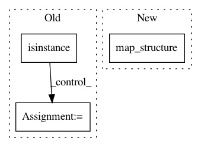

1775e89f262111791fabfd40f80a24f74738fe54,rllib/models/catalog.py,ModelCatalog,get_action_dist,#Any#Any#Any#Any#,107
Before Change
dist = Categorical if framework == "tf" else TorchCategorical
// Tuple Space -> MultiAction.
elif dist_type is MultiActionDistribution or \
isinstance(action_space, gym.spaces.Tuple):
if framework == "torch":
// TODO(sven): implement
raise NotImplementedError(
"Tuple action spaces not supported for Pytorch.")
child_dist = []
input_lens = []
for action in action_space.spaces:
dist, action_size = ModelCatalog.get_action_dist(
action, config)
After Change
TorchMultiActionDistribution) or \
isinstance(action_space, (gym.spaces.Tuple, gym.spaces.Dict)):
flat_action_space = flatten_space(action_space)
child_dists_and_in_lens = tree.map_structure(
lambda s: ModelCatalog.get_action_dist(
s, config, framework=framework), flat_action_space)
child_dists = [e[0] for e in child_dists_and_in_lens]
input_lens = [e[1] for e in child_dists_and_in_lens]
return partial(
(TorchMultiActionDistribution
In pattern: SUPERPATTERN
Frequency: 3
Non-data size: 3
Instances
Project Name: ray-project/ray
Commit Name: 1775e89f262111791fabfd40f80a24f74738fe54
Time: 2020-04-28
Author: sven@anyscale.io
File Name: rllib/models/catalog.py
Class Name: ModelCatalog
Method Name: get_action_dist
Project Name: ray-project/ray
Commit Name: 1775e89f262111791fabfd40f80a24f74738fe54
Time: 2020-04-28
Author: sven@anyscale.io
File Name: rllib/policy/policy.py
Class Name:
Method Name: clip_action
Project Name: ray-project/ray
Commit Name: 1775e89f262111791fabfd40f80a24f74738fe54
Time: 2020-04-28
Author: sven@anyscale.io
File Name: rllib/agents/es/es_tf_policy.py
Class Name: ESTFPolicy
Method Name: compute_actions